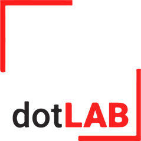

Os materiais de introdução à pesquisa do projeto, na ordem sugerida de leitura. O ritmo de cada estudante é combinado com a orientadora.
Os PDFs ficam disponíveis aqui assim que cada material é aprovado pela orientação.
Os materiais do projeto usam a identidade visual do Isso é normal?. Os gerais usam exemplos do hansen.ai, outro projeto do dotLAB.